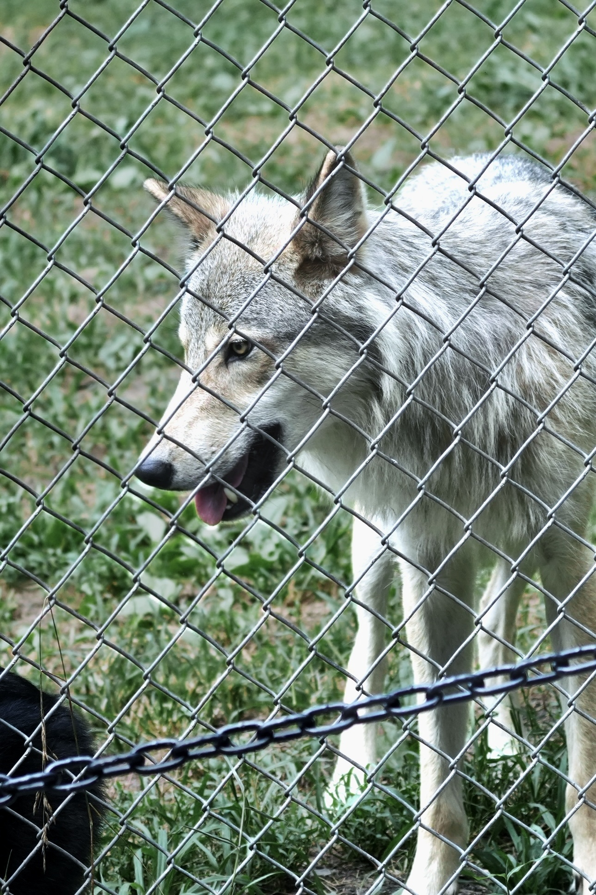

In Chinese culture, wolves are traditionally associated with greed and cruelty, and they are often used in words to describe negative behaviors. However, from childhood, the wolf has been my favorite animal. I read many books and documents about them and discovered that they are actually intelligent, cooperative, and emotional. There are still many misunderstandings about them, and I want to learn more about them in depth.